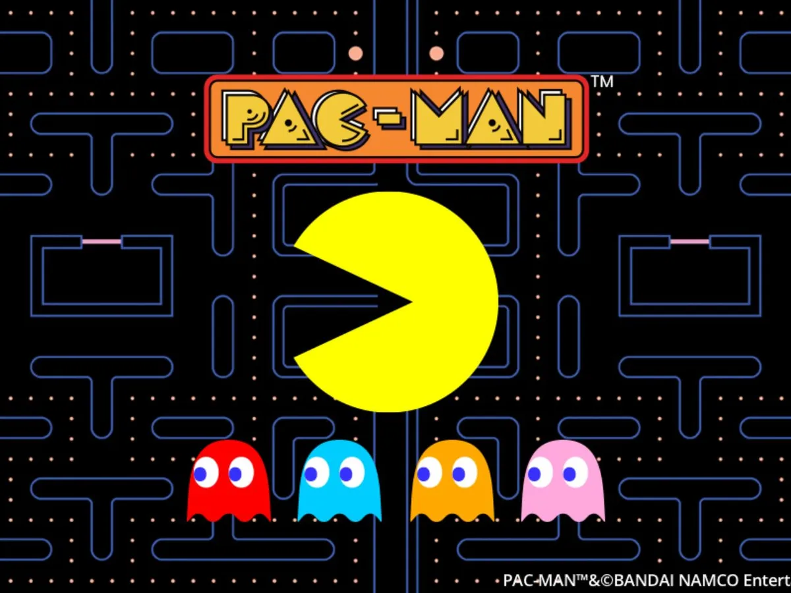
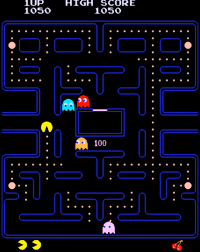

Pacman
Pac-Man fue creado por Toru Iwatani, empleado de Namco cuando ordenó una pizza. Cuando la primera porción de la pizza
fue quitada, la pizza tenía un aspecto similar al de
una cabeza con la boca abierta, esto es lo que inspiró a Iwatani para crear el personaje originalmente
llamado “Puck-Man”. Sin embargo, el nombre de
“Puck-Man” no podía ser utilizado debido a los niños estadounidenses, ya que el nombre era parecido a un término obsceno. Por lo tanto, se lo llamo
“Pac-Man” como nombre en América, y finalmente,
en el nombre oficial.
Popularidad en Japón y por encima
de los mares
Como muchos saben, al igual que algunos otros videojuegos, Pac-Man fue desarrollado en Japón y rápidamente se hizo muy popular, sin embargo, su debut
en los Estados Unidos demostró ser aún más exitoso
y Pac-Man se convirtió en el videojuego de arcade más
populares en el momento de su lanzamiento.


Por razones desconocidas, un diseño alternativo de
Pac-Man se hizo para el lanzamiento internacional que
tenía poco o ningún parecido con su diseño original.
Recreación de Atari
En 1981, la compañía de videojuegos Atari lanzó
un nuevo videojuego de Pac-Man para su sistema
de videojuegos Atari 2600. En lo que hoy es ampliamente considerado como uno de los mayores
eZrrores de la historia de dicha consola, Atari produjo doce millones de cartuchos, a pesar de que sólo
había vendido diez millones de unidades de consolas. Ellos esperaban las personas que aún no poseían
el sistema lo comprarían sólo para jugar a Pac-Man.
El videojuego fue universalmente criticada por los
críticos y aficionados por igual por sus fantasmas parpadeantes y el movimiento lento del personaje.
Sólo cinco millones de cartuchos vendidos, dejando Atari atrapados con alrededor de siete millones de cartuchos vendidos.
El futuro de Atari financieramente fue
puesto en grave peligro.
Después de una debacle aún más desastrosa con su último intento de recuperar las
ventas, el infame videojuego de Atari 2600:
E.T. the Extra-Terrestrial, Atari aplastado
y dejó más de diez millones de cartuchos
vendidos de Pac-Man y E.T. the Extra-Terrestrial en un vertedero en Almo Gordo,
Nuevo México. Una gran cantidad de concreto se vierte sobre el sitio de entierro para
evitar que los niños y otros carroñeros lo
desentierren. Esto marcó la muerte de Atari y la primera era de los videojuegos de
consola, en general, hasta la segunda mitad
de la década de 1980
Familia extendida
Tras el enorme éxito del primer videojuego
de Pac-Man, los distribuidores americanos
(Midway Games), hicieron varias secuelas
no oficiales (algunas de las cuales no fueron autorizados por Namco) protagonizada por supuestos miembros de la familia
de Pac-Man.
El primer videojuego que es Ms. Pac-Man, protagonizada por su esposa y presentaba un reto más grande
que el videojuego anterior, y después de haber sido anulado Namco decidió autorizarla. Namco, entonces, fue
a crear una secuela oficial llamado Super Pac-Man, que
resultó un gran éxito “Pinky” (su novia) en pacman y las
aventuras fantasmales; “Esferia” (tia), Mr. Pacman (padre ) y Mra. Pacman (madre).

Pac-Man: La serie animada
En 1982, Hanna-Barbera produjo la serie animada de televisión, Pac-Man que contó con las desventuras de Pac-Man y su
familia en Pac-Land. Pac-Manes visto en el show cuidando de
su familia, yendo a trabajar protegiendo el Power Pellet Forest,
o derrotando a los fantasmas. Los fantasmas tienen un líder en
este show, un humanoide de piel verde pálido llamado Mezmeron, que quería derrotar a Pac-Man y aprovecharse de
las Power Pellets por una razón que no se ha especificado.
Pac-Man fue apodado a menudo como “Packy” por
Ms. Pac-Man, mientras él le decía “Pepper” a su esposa.
El propio Pac-Man fue expresado por el veterano comediante
y escritor Marty Ingalls.
Es posible que el entorno único de este show inspiraría la
creación del videojuego de Pac-Land, que fue el primer videojuego que cuenta el mundo natal de Pac-Man con todo detallado, y cuando se lanzó en los Estados Unidos se han alterado los
gráficos para parecerse a los de los dibujos animados.
Era 3D
Pac-Man alcanzó la fama prácticamente sin precedentes en la década
de 1990. Las figuras y los videojuegos eran constantemente puestos en
libertad. Después del lanzamiento
de numerosos videojuegos exitosos
que salieron en el momento, Namco decidió crear un videojuego que
abasteciera a la popularidad de los
videojuegos de plataformas en 3D.
Fue entonces cuando Pac-Man
World fue lanzado.
El videojuego tuvo un Pac-Man
tridimensional luchando contra los
enemigos en tres dimensiones por
primera vez. Pac-Man alcanzó la
mayor fama una vez que este videojuego fue lanzado en los Estados
Unidos y fue un gran éxito. Muchos
de los videojuegos que salieron en
los años 90 comienzan con Pac-Man
2: The New Adventures y Pac-Man
World que marcó la primera aparición de toda la familia de Pac-Man
juntos que antes eran personajes no oficiales creadas
por Midway Games.
A lo largo de los próximos años, muchos videojuegos originales de Pac-Man se siguieron lanzando,
aunque con recepción varía en gran medida entre la
confusión y remakes positivos o negativos a veces entre
ellos, y sólo de los videojuegos de arcade que recibieron
elogios de la crítica.
Reinicio y re-diseño
Para su trigésimo aniversario, Pac-Man recibió un reinicio completo, ahora con un diseño más joven, vestimenta actualizada y ojos más rellenados. Este Pac-Man
se hace para ser mucho más joven que su encarnación
anterior y como tal su familia de Midway parece haberse convertido retroactivada o reemplazada.
Para conmemorar el 30 aniversario y su nuevo
look, Pac-Man se le dio un nuevo videojuego titulado Pac-Man Party que ofrece junto a todo un nuevo
elenco de amigos y versiones actualizadas de Blinky,
Pinky, Inky y Clyde.
Pac-Man también se le dio una nueva serie animada titulada Pac-Man and the Ghostly Adventures que
ofrece ahora una futurista Pac-Land y una nueva gama
de personajes. Varios videojuegos lanzados después de
la serie de animación ofrecerían diseños y elementos
de la nueva serie animada, sin embargo los videojuegos
más recientes ha aparecido Pac-Man con su diseño clásico
pero con el Ghost Gang que conserva su aspecto nuevo
(aunque con algunos rasgos alterados). También hay que
resaltar que desde el reinicio, Pac-Man ha aparecido en
una amplia gama de materiales en crossovers con otros
personajes de videojuegos como una forma de presentarle
a una nueva y más amplia audiencia.


 Pac ‘n Roll
La primera aventura de Pac-Man antes del reinicio comenzó canónicamente en este videojuego. En
su juventud Pac-Man se entrenó bajo el poderoso
Pac-Master durante sus vacaciones de verano. Él enseñó a Pac-Man todo sobre la lucha y de las Power
Pellets, por lo que podría ayudar en la defensa de
Pac-Land de los muchos fantasmas que plagaron en
ella. Durante su entrenamiento se crió cerca de la familia de Pac-Master, que sobre todo creció cerca de la
hermosa hija de Pac-Master que algún día se convertiría en su novia de futuro, Ms. Pac-Man.
Lamentablemente la alegría no duraría
por mucho tiempo cuando un joven grupo
de fantasmas (Blinky, Inky, Pinky y Clyde)
planeaban convocar a un poderoso fantasma
llamado Golvis, para derrotar a Pac-Master
y destruir la cosecha de Power Pellets.
En el día del Festival de la cosecha de
Power Pellets, Golvis y los fantasmas comenzaron su asalto, y Pac-Master intentó
enfrentar a Golvis pero lamentablemente el
gran fantasma era casi inmune a los efectos
de los Power Pellets. Jack para convertir
cada Pac-Persona en orbes sin extremidades
lo que los hace incapaces de moverse, luego
utilizó a Jack para hacer estallar todo por
la borda, por suerte el espíritu de la guardián de Pac-Land: Krystal, derrotó temporalmente a Golvis, sin embargo ella era sólo
es capaz de salvar al joven Pac-Man. Luego
convence a Pac-Man para ayudar a salvar a
Pac-Land ya que es el único que queda.
Después de viajar a través de todo PacLand finalmente llegan a la base de Golvis,
donde con sus fuerzas combinadas finalmente lo derrotan, restaurando así los cuerpos de todos las Pac-Personas y salvando a
Pac-Master y su familia.
Pac ‘n Roll
La primera aventura de Pac-Man antes del reinicio comenzó canónicamente en este videojuego. En
su juventud Pac-Man se entrenó bajo el poderoso
Pac-Master durante sus vacaciones de verano. Él enseñó a Pac-Man todo sobre la lucha y de las Power
Pellets, por lo que podría ayudar en la defensa de
Pac-Land de los muchos fantasmas que plagaron en
ella. Durante su entrenamiento se crió cerca de la familia de Pac-Master, que sobre todo creció cerca de la
hermosa hija de Pac-Master que algún día se convertiría en su novia de futuro, Ms. Pac-Man.
Lamentablemente la alegría no duraría
por mucho tiempo cuando un joven grupo
de fantasmas (Blinky, Inky, Pinky y Clyde)
planeaban convocar a un poderoso fantasma
llamado Golvis, para derrotar a Pac-Master
y destruir la cosecha de Power Pellets.
En el día del Festival de la cosecha de
Power Pellets, Golvis y los fantasmas comenzaron su asalto, y Pac-Master intentó
enfrentar a Golvis pero lamentablemente el
gran fantasma era casi inmune a los efectos
de los Power Pellets. Jack para convertir
cada Pac-Persona en orbes sin extremidades
lo que los hace incapaces de moverse, luego
utilizó a Jack para hacer estallar todo por
la borda, por suerte el espíritu de la guardián de Pac-Land: Krystal, derrotó temporalmente a Golvis, sin embargo ella era sólo
es capaz de salvar al joven Pac-Man. Luego
convence a Pac-Man para ayudar a salvar a
Pac-Land ya que es el único que queda.
Después de viajar a través de todo PacLand finalmente llegan a la base de Golvis,
donde con sus fuerzas combinadas finalmente lo derrotan, restaurando así los cuerpos de todos las Pac-Personas y salvando a
Pac-Master y su familia.